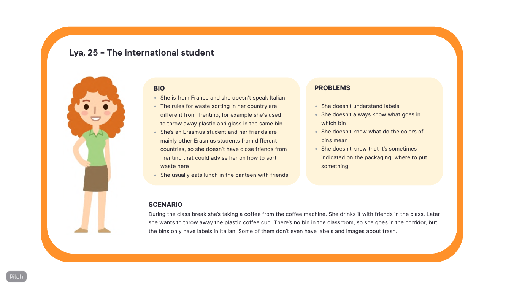
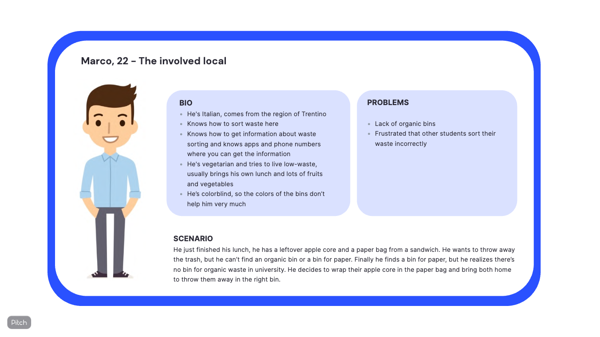
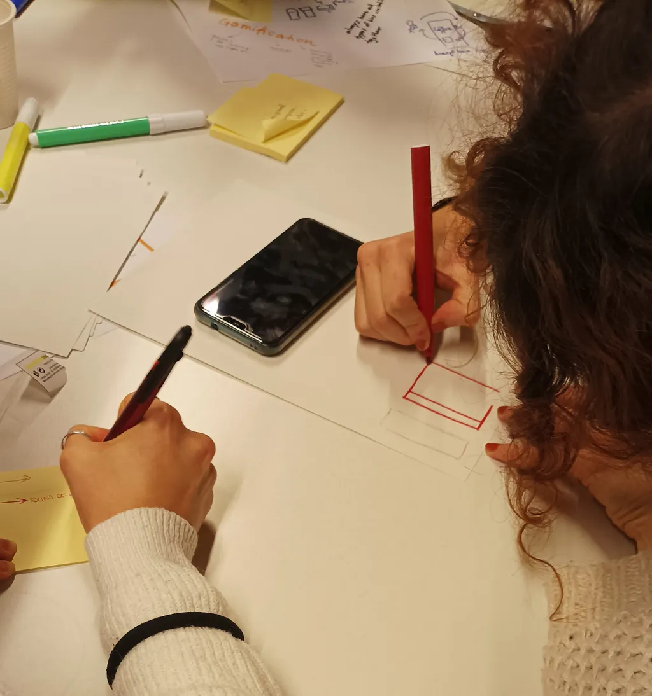
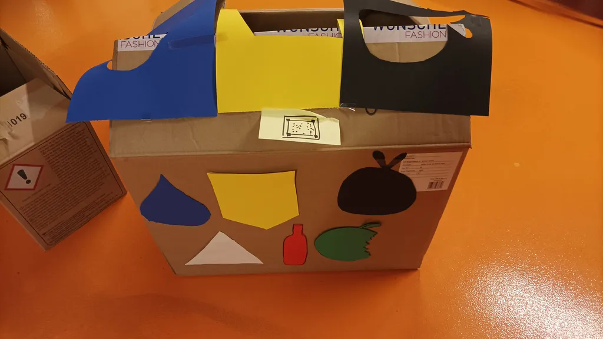
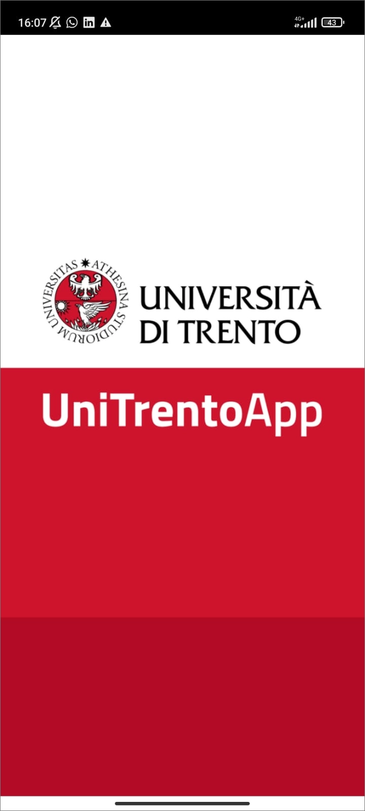
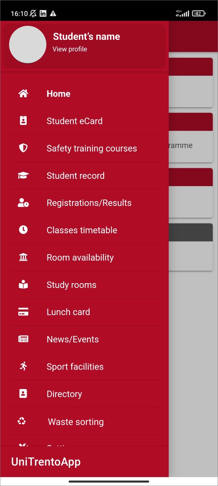
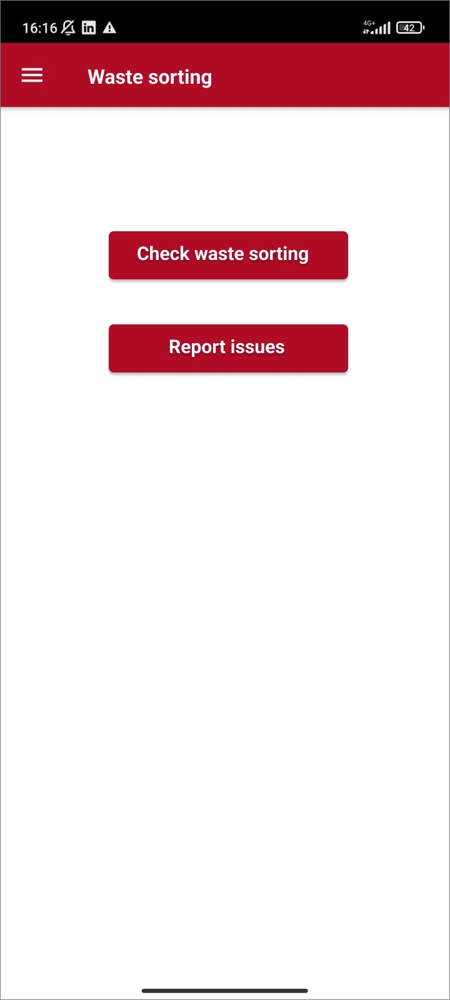
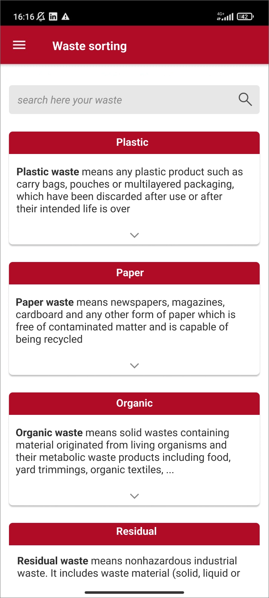
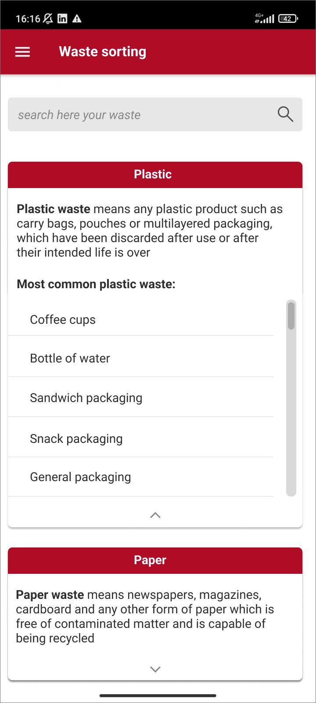

Making waste sorting more intuitive for university students.
Ethnographic research, participatory workshops, and digital prototyping.
How can design make recycling easier in everyday campus life? Over five months, our team investigated students' behaviors, frustrations, and mental models around waste sorting at the university.
I contributed to the field research by conducting ethnographic observations and interviews with students, co-facilitated a participatory workshop with 12 students, and worked on the wireframes and visual design of the digital solution. Together, we developed a concept that connects physical and digital touchpoints to make sorting waste clearer, more accessible, and less effortful.
Students don't always sort waste correctly. Not because they don't care, but because the system makes the right choice difficult. Our early observations highlighted three recurring issues:
As a result, students often relied on guesswork or ignored the system entirely. Rather than expecting them to learn a complicated set of rules, we asked how design could make the correct action easier to recognize and perform.
I conducted ethnographic observations in key campus areas, such as gardens, vending zones, and study spaces, documenting how students approached the bins, where they hesitated, and how placement and signage influenced their decisions.
To understand the reasons behind what I observed, I also conducted interviews with students, exploring how they decide where to throw things away, what confuses them, and what would help. Combined with the team's focus groups, these conversations revealed that:
These insights shaped the personas and user scenarios that grounded the rest of the project in real needs.
Our research showed that the challenge wasn't a lack of information, but the effort required to find and interpret it. Using personas that represent different behaviors and motivations, we set three guiding principles:
This shifted our focus from asking students to adapt to the system to designing a system that supports them.


To explore solutions together with users, I co-facilitated a participatory workshop with 12 students. Participants first engaged with our personas to reflect on different needs, then moved from brainstorming to low-fidelity prototyping with paper, cardboard, Post-it notes, and LEGO bricks.
This hands-on format let students turn abstract ideas into tangible concepts, helped us validate directions early, and kept the solutions grounded in their expectations.


Building on the research and workshop insights, we designed an integrated system combining physical and digital interventions:
I designed the wireframes and visual design of the app, translating research insights into a proposed digital experience. The result is a system that supports students in the moment, rather than relying on prior knowledge.





Spending time on campus observing how students interacted with waste sorting systems taught me that some of the most valuable insights are found in behaviors people rarely articulate. Hesitations, guesswork, and quick decisions revealed friction points that might have gone unnoticed in a survey, while interviews helped me understand the motivations behind them. Co-facilitating the workshop reinforced the value of involving users in the design process. By bringing their perspectives into the conversation, we could explore solutions grounded in their everyday routines and needs. It also showed me how small changes, such as clearer communication and better visibility, can make an otherwise complicated task feel more intuitive.
Above all, this project taught me that empathy isn't just a step in the design process; it's the foundation of it. Understanding people's behaviors and constraints shifts the focus from correcting users to improving the systems they interact with. Because sustainable behavior isn't just about encouraging better choices; it's about designing experiences that make those choices easier.